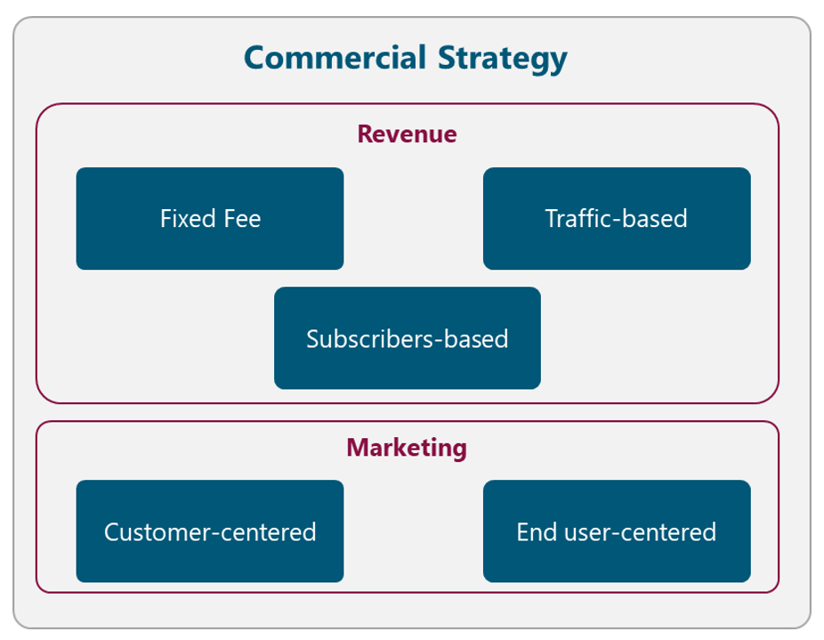
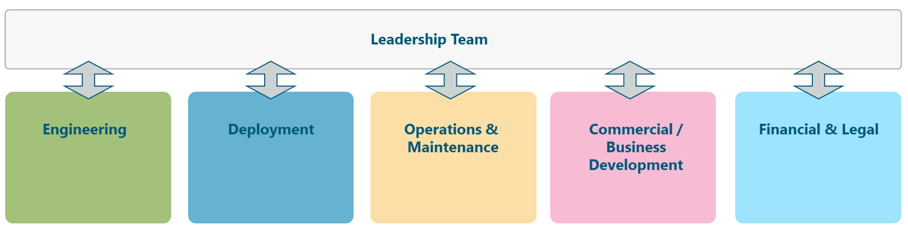

The present section describes the
definition of the strategy and long-term objectives that ultimately will guide
the downstream activities.
An organization-wide strategy is a general statement(s) that guides
and covers a set of activities. It answers the question how. By consistently
executing an organization-wide strategy, the NaaS operator can provide a
product or service thats better than its competition.
In this step of the planning process, the synthesized information in
the SWOT analysis, the mission, vision and competitive advantages are used to
develop the organization-wide strategy or strategies that will guide goal and
action planning.
The following elements summarize the core of strategy and should be
accomplished in the definition of an organization-wide strategy:
- Diagnosis of the
situation: A good strategic
diagnosis does more than explain the situation; it also defines the domain of
action. This can be accomplished during the SWOT process.
-
Guide decisions: A good strategy directs and constrains action
without fully defining its containment. It tackles the obstacles identified in
the diagnosis by creating or drawing upon sources of advantage. This is the
intended outcome during this phase of the planning process.
-
Design of coherent,
coordinated action: Goals
and actions at various levels of the organization are developed in concert with
the guiding strategy. These elements are developed in the subsequent phases.
There are certain areas within the
NaaS operator that require the definition of a strategy that guides the
decision of subsequent phases. These areas are presented in Figure 5 and are
examined in the following subsections.

Figure 5. Strategy Map
Additionally,
the Naas operator can use the Strategy
& Scope Definition Template to support the definition of their
own strategies.
A primary
element to develop a telecommunication network is to identify the funding
methods to deploy the network. There are different strategies for funding
telecommunication projects that are presented in Figure 6. NaaS operators must
evaluate which of them will be used to fund the initiative. The final decision
must consider, among other elements, the applicable political and regulatory
conditions and it must be recorded in the Strategy
& Scope Definition Template.
Figure 6. Funding Strategy Alternatives
In the following subsections, multiple
alternatives that can be used in different countries around the world are
presented.
Self-financing
Most of the
time, self-financing method is only applicable when the NaaS operator already
has an existing network in the country. In this way, the costs of infrastructure
can be reduced as existing towers and fiber can be used to support the
deployment of the 4G network. Furthermore, the profits from the existing
network can be used to build out the new network deployment.
In case that the
cost of deployment exceeds the NaaS operators financial capabilities, an
alternative method must be evaluated.
Telecom subsidies
An alternative
option is to apply for telecom subsidies in the region. A definition of a
subsidy is a grant or a monetary gift, usually given from the government to a
specific project. Another form of subsidies is that the government reduces the
taxes for a company that needs assistance; thereby they get more financial
resources.
Joint
venture loans
Joint venture
loans are an option when the loan for the investment cannot be covered for one
single company. This means that two or more companies share the risks and
benefits of the loan.
Joint ventures
can result in an effective partnership, but to make this happen, they must be
structured. To ensure this, it is recommended that an independent president is
chosen.
A joint venture
often ends when the predetermined goal has been reached (e.g. the deployment
completion) so all involved parties need to be prepared for that.
Public-Private
Partnership
This partnership
means that the private and public sectors share the risk for the project. If
there is any risk that they together cannot control, the public sector usually
takes responsibility for that risk.
Principally a
public-private partnership is a form of privatization, but with a big
difference that the public sector is also involved. The partnership is
involving the government and one or more private sector companies.
The traditional
approach of network deployment, where each operator builds its own network
infrastructure is not efficient in rural markets with low population density.
In turn, the NaaS operator must analyze ways to co-operate with other operators
on expanding network coverage whilst preserving healthy competition in service
provision. In this way, an MNO can become a partner for the NaaS operator.
The Operator
Engagement has multiple dimensions in the sense that include elements of the
Spectrum, Commercial and Infrastructure Strategies. These elements are examined
in its corresponding section, but the final definitions must be consolidated in
an Operator Engagement Package in order to present them to the operators.
Figure 7
illustrates different alternatives to perform the Operator Engagement. The NaaS
operator must evaluate them and select the most appropriate according to its
conditions. The final decision must be recorded in the Strategy
& Scope Definition Template.

Figure 7. Operator Engagement Strategy
Alternatives
The following
subsections describe the way to engage different types of operators as well as
their impact on the NaaS operator strategy. It must be noted that the decision
of the operators to be considered to interconnect with, has a direct impact on
the RAN and Mobile Core implementation.
The primary
driver that an existing Mobile Network Operator can consider to set an
agreement with the NaaS operator is to extend its coverage to rural scenarios.
For this, the scenarios in the following subsections can be implemented.
The impact on
the NaaS operators Radio Access Network and Mobile Core implementation are
further detailed in the respective Architecture Modules.
Network Roaming Agreements
In this scenario, NaaS Operator owns the RAN and the core
network and redirects the traffic to MNOs core networks. Additionally, the
user might have to enable roaming on their phone to access the NaaS network.
This scenario
for the NaaS operator implies that a complete RAN and transport infrastructure
must be deployed using its own spectrum. Additionally, the Mobile Core must
also be implemented along with the interconnection to MNOs Mobile Core.
RAN Sharing Agreements
NaaS Operator
can provide its RAN infrastructure to multiple MNOs based on different RAN
Sharing schemes (e.g. Multi-Operator RAN,
Multi-Operator Core Network). In this scenario, a pool of radio spectrum is
formed using the available sources (e.g. NaaS operator, MNO). In addition, MNOs
rely on the NaaS radio/transport infrastructure to provide service to
the end user.
This scenario
for the NaaS operator implies that a complete RAN and transport infrastructure
must be deployed and its radio spectrum (if existing) can be used to conform
the pool of spectrum.
A Mobile Virtual
Network Operator (MVNO) is a virtual operator that offers mobile services under
its trademark by using network services from a third-party mobile operator. The
MVNOs can be further classified in different categories according to their
characteristics.
The impact on
the NaaS operators Mobile Core implementation are further detailed in the
Architecture Module.
Full-MVNO
In this
scenario, the NaaS operator just provides the access network infrastructure
and, sometimes, part of the core network. Therefore, the MVNO must build and
maintain its own Mobile Core. As a result, the MVNO manages its own customer
base and associated services independently from the host operator.
This scenario
for the NaaS operator implies that a complete RAN and transport infrastructure
must be deployed. In addition, the NaaS operator must possess granted radio
spectrum. Finally, the interconnection to MNOs Mobile Core needs to be
implemented.
Light-MVNO or Re-seller
The MVNO just
provides its brand and its distribution channels. In contrast, the NaaS
operator provides the access and transport, as well as the mobile service. This
is the model that requires the lowest investment from the MVNO, therefore the
fastest to implement.
A Light-MVNO
delegates the networks operational management to its host operator, in order
to focus on customer relations.
This scenario
for the NaaS operator implies that a complete RAN and transport infrastructure
must be deployed. . In addition, the NaaS operator must possess granted radio
spectrum. Finally, a complete Mobile Core must also be implemented.
Efficient
spectrum management has an important impact on the quality and reach of
affordable mobile services. Figure 8 displays the different alternatives to
obtain and manage the radio spectrum.The NaaS operator must evaluate each
alternative and select the most appropriate according to its conditions. The
final decision must be recorded in the Strategy
& Scope Definition Template.

Figure 8. Spectrum Strategy Alternatives
The following subsections examine different
approaches to obtain and manage the radio spectrum.
It should be
noted that a spectrum license should also be considered for transport microwave
equipment. However, microwave spectrum considerations are deeply analyzed in
the Transport & IP Architecture module.
The first
alternative is that the NaaS operator manages and operates its own granted
spectrum. The following subsections examine different alternatives to achieve
this.
Re-farming
If the NaaS
operator has an existing operating mobile network, it can use the already
licensed spectrum to deploy LTE services. Existing low-frequency spectrum (e.g.
900MHz) used for 2G/3G services can be more effectively reused for 4G service
deployment.
Spectrum re-farming is a cost-effective way to increase
capacity in existing networks without the need to bid for new spectrum and by
reutilizing infrastructure to overlay LTE.
Standard
Licensed spectrum
The NaaS
operator can follow the standard licensed mechanisms to acquire sufficient
spectrum to provide broadband mobile services.
However, the
cost of the spectrum fee may impact the overall business case. Additionally,
the process of acquiring spectrum is highly time-consuming given its
complexity.
Rural
Licensed spectrum
Spectrum
regulators have been encouraged to clear the 700 MHz and 800 MHz spectrum
through the migration to digital television, which can release the so-called
digital dividend spectrum for use by mobile services, especially in rural
areas.
Furthermore, in
some countries, the local government provides specific telecom subsidies and
grants to these types of radio bands in order to promote the coverage expansion
in rural areas. The NaaS operator can analyze its applicability to these
special programs.
Unlicensed
Spectrum
The utilization
of unlicensed spectrum in the 5GHz range allows an operator to deploy LTE
services without the necessity of a license for spectrum. However, the use of
unlicensed spectrum imposes transmission power limitations, which limits the
coverage area.
In addition, the
NaaS Operator needs to verify if other operations are using unlicensed spectrum
in the area, as this may cause a considerable amount of interference.
The NaaS
Operator must be aware that the operation of LTE in unlicensed spectrum may not
be supported by all user devices.
NaaS operators
can use a 3rd party spectrum assigned to provide LTE services. The
following subsections examine different options to accomplish this.
MNO
Spectrum
NaaS Operators
can use the MNO granted spectrum to provide LTE services via different RAN
Sharing schemes (e.g. Multi-Operator RAN,
Multi-Operator Core Network). In this scenario, the spectrum of the MNO is
used and, in some cases, shared.
This scenario imposes some special considerations on the
overall network architecture that need to be taken into account and are further
explored in the Transport and IP Architecture Module.
Spectrum
Leasing
NaaS operators
can lease the spectrum from a third party (e.g. MNO, WISP) in order to provide
LTE services. This represents an additional recurrent cost to NaaS operators
that may impact the overall deployment business case.
In addition, an
accurate capacity forecast analysis must be performed in order to determine the
amount of bandwidth to lease. If this is not well-forecasted, the NaaS operator
may over or underutilize the leased bandwidth.
5.1.4
Commercial Strategy
The commercial
strategy of the NaaS operator is composed of two elements: Revenue Strategy and
Marketing Strategy. Figure 9 displays the different alternatives related to the
Commercial Strategy. The NaaS operator must evaluate each alternative and
select the most appropriate according to its conditions. The final decision
must be recorded in the Strategy
& Scope Definition Template.

Figure 9. Commercial Strategy
Alternatives
The Revenue
Strategy must identify Revenue Streams within the NaaS operator environment.
The nature of each of the streams is different, so a specific Pricing
Strategies are required for each of them.
The applicable pricing strategies in the
context of the NaaS operator are:
- Fixed Fee: In this case, the NaaS operator charges a
recurrent fixed fee for providing the services to the 3rd party
independently of the service consumption. The recommended frequency to perform
this activity is on a monthly
basis.
-
Traffic-based: The
NaaS operator can bill according to the generated traffic by the 3rd
party subscribers.
-
Subscribers-based: Alternatively,
in the Light-MVNO scenario, the charged fee can vary according to the number of
subscribers to be supported by the NaaS operator network independently on the
specific user behavior.
In this way, the
different Revenue Streams can be classified accordingly. Table 3 displays a
typical Revenue Streams classification for a NaaS Operator.
|
Revenue
Stream
|
Description
|
Customer
|
Pricing
Strategy
|
|
LTE
Service Provisioning
|
Revenue is generated by the
provision of the LTE service to 3rd party entities.
|
MVNO,
specially Light-MVNOs
|
- Fixed Fee
- Traffic-based
- Subscribers-based
|
|
RAN
Infrastructure Leasing
|
Revenue generated by leasing its
RAN infrastructure
|
MNOs
or WISPs
|
- Fixed Fee
|
|
Roaming
Agreements
|
Revenue generated for providing
LTE service to MNO's subscribers in an area where only the NaaS operator have
coverage
|
MNOs
|
- Traffic-based
|
Table 3. Typical Revenue
Classification for a NaaS Operator.
The Marketing
Strategy describes the specific types of Marketing Models that NaaS operators
will implement in order to promote its services among its direct customers and
end-users.
The marketing
models that the NaaS operator should consider are presented in the following
subsections.
Customer-centered
This model is
part of the Engagement Operator package and is focused on promoting the
differentiators of the NaaS operator services among its direct customers (e.g.
MNOs, MVNOs). The aim is to demonstrate and explain the advantages of using
NaaS operator services (e.g offer cheaper broadband mobile service focused on
rural connectivity).
Once an
engagement is established, periodic approaches can be performed in order to
consolidate and strengthen NaaS operator position.
The usual
channels of communication used by this model are Email and Face-to-face
Meetings.
End-user-centered
The focus of
this model is to announce and promote the NaaS operators services among end
users (i.e. mobile subscribers). These end users may not buy directly from the
NaaS operator, however, they need to be aware that they are making use of its
services. This type of marketing is very important when a NaaS operator brings
connectivity to a new area, so the inhabitants aware that this new connectivity
exists.
This model
expects to encourage further positive purchase-related behavior. This can be in
the form of subscribers visiting the NaaS operator website, read about it, and
share.
The typical
channel communication used by this model is mass media (e.g. Social media, TV
spots, radio advertisement, printed newsletter)
The commercial
strategy of the NaaS operator comprises two aspects: the Logistics & Warehousing
and the Infrastructure strategy. Figure 10 displays the different alternatives
related to the Logistics & Warehousing Strategy. The NaaS operator must
evaluate each alternative and select the most appropriate according to its
conditions. The final decision must be recorded in the Strategy
& Scope Definition Template.
Figure 10. Deployment Strategy
Alternatives
Logistic &
Warehousing describes the form in which all the network equipment and
ancillaries are stored and distributed. The possible alternatives to implement
these services are described in the following subsections.
Self-Managed Services
One alternative
to perform the Logistics and Warehousing services is that the NaaS operator
implements them with its own resources and facilities. This option is only
applicable if the NaaS operator already has an existing implementation of these
services or if it possesses enough resources to implement them. Another case
that fits this strategy is for small NaaS Operators with no more than a handful
of sites as little space to store equipment is required.
The
implementation of this option requires an additional design phase if the
Logistics & Warehousing services are not already deployed. Furthermore, it
may represent additional costs such as Warehouse rent of space and specialized
Management Systems.
More details on
the processes related to Logistics & Warehousing design and implementation
are included as part of the Logistics & Warehousing Module.
3rd Party Managed Services
Another option
for the NaaS operator consists of hiring a 3rd party Logistics and
Warehousing Company to manage these services. In this way, the operations of
these services are the responsibility of the 3rd party, lightening
the operational workload of the NaaS operator.
This option is
recommended for the NaaS operator as the burden of these services will decrease
when the deployment phase is completed and only will apply for the spare
equipment.
Equipment Vendor Services
Some vendors
offer Transportation & Logistics services for their equipment, so NaaS
operators can rely on them. However, this only applies to certain regions and
vendors that include these services as part of its purchase agreements. If the
vendor provides these services as an additional feature, the considerations of
the 3rd Party Managed Services are applicable.
The
Infrastructure strategy describes the model that NaaS operators will implement
to build and manage the required network infrastructure (e.g. Fiber
Infrastructure, Sites, and Towers). The following subsections examine different
models to implement this strategy.
Own
Infrastructure
The NaaS
operator can perform these activities with its own resources if it already has
an existing infrastructure (e.g. MNO with existing mobile network, Tower/Fiber
Companies) or if it possesses enough resources (e.g funding and personnel) to
deploy them.
The development
of this option requires an additional design phase for the new infrastructure to
be deployed and additional time to acquire the sites. Moreover, it may
represent high additional costs such as material (e.g. fiber optic, steel),
machinery and equipment construction.
More details on
the processes related to the infrastructure design and implementation are
included as part of the Tower/Site construction and Fiber Construction modules.
Infrastructure
Sharing
Infrastructure
sharing models can have a profound, positive impact on the economics of network
deployment into rural and remote areas. In this model, the involved partners
share the capital and investment costs of the network infrastructure
deployment. For NaaS operators, potential partners to be considered by the NaaS
operator are MNOs with no coverage in the area, Tower or Fiber companies.
When the
infrastructure is already deployed, the operation and maintenance tasks can be
shared or can be absorbed by one of the parties as part of the initial
agreements.
Leased
Infrastructure
If there is
infrastructure available in the area, the NaaS operator can lease the
infrastructure to a 3rd party (e.g. MNO with 2G/3G coverage,
Tower/Fiber Companies). In this form, the NaaS operator can avoid investment in
new infrastructure deployment. The most common type of leased infra is in the
form of telecom towers and transport networks.
Additionally,
the operation and maintenance of the infrastructure are absorbed by the 3rd
party, lightening the operational workload of the NaaS operator.
The operations
strategy defines the model that NaaS operators will follow to perform the
network operation and maintenance tasks. This includes the management of the
Network Operation Center (NOC), Field Maintenance and Service Operations Center
(SOC), as required. Figure 11 displays the different alternatives related to
the Operations Strategy. The NaaS operator must evaluate each alternative and
select the most appropriate according to its conditions. The final decision
must be recorded in the Strategy
& Scope Definition Template.
Figure 11. Operations Strategy
Alternatives
Self-Managed
Services
The NaaS
operator can perform the network operation and maintenance activities with its
own resources and facilities.
However, it
represents additional costs for the required specialized staff to perform the
activities. Furthermore, it may represent additional costs such as rent of
space and specialized Network Systems.
3rd
Party Managed Services
An alternative
option is to hire a 3rd party Company that manages the network
operation and maintenance activities. In this way, these activities are the
responsibility of the 3rd party, lightening the operational workload
of the NaaS operator.
This model is
also convenient when sites are deployed in rural locations that are far away
the locations the NaaS operates from. Therefore, the disposal of local
resources is also a deciding factor to select a 3rd party company.
In this
scenario, the cost of specialized hardware cannot be avoided because most of
the network equipment requires a Licensed Software to perform the network
operation and maintenance activities.
The organization
design specifies the division of functional areas within the NaaS operator
structure. It establishes the different levels of hierarchy within the
organization and delimits the responsibilities of each of them.
Figure 12
presents a typical NaaS operator organizational structure. This structure
includes a Leadership Team which develops the Strategy & Scope and the
High-level Project Plan.

Figure 12. Typical NaaS operator
Organizational Structure.
- Engineering: Responsible for the generation of the HLD/LLD
Network Designs for the different network segments and technologies. It also
performs the technical evaluation of different vendor equipment solutions.
-
Deployment: Manages the activities relevant to the network
deployment including among others the installation & commissioning and
integration of the network equipment.
-
Operations &
Maintenance: Oversees the
activities related to network operation and maintenance, including among others
the monitoring of the network and the incidence response.
-
Commercial / Business
Development: Supports with
commercial related activities such as the procurement process and vendor
management.
-
Financial & Legal:
Controls financial
resources of the NaaS operator as well as provides the legal support required.
Depending on the
size of the NaaS operator, the management and supervision of the available
resources can be done by one person for all the areas. However, in larger
organizations, a manager for each function might be required. The specific
resource requirements for each of the presented areas are examined in more
detail in the High Level Project Plan Module.
A long-term strategic objective is a long-term (e.g. 3-5 years),
broad, continuous statements that holistically address the different areas of
the NaaS operator. Long-term objectives that are viable and appropriate should
remain as something that will not change and must be achieved.
The long-term strategic objectives should consider the SWOT
analysis. In this way, they will be built on the strengths of the company, fix
weaknesses, pursue opportunities and resolve any threats.
In order to define the long-term strategic objectives, the key
activities that need to be performed to achieve the vision must be identified
considering the strategies presented in section 5.1.
An example of a long-term strategic objective in the NaaS operator
context is:
- To expand network coverage
for 10,000 people in the rural La Selva Lacandona area in the following 3
years.
Once the long-term objectives have been identified, they must be
translated into goals and measures that can be clearly communicated to the
leadership team. Effective goals clearly state what, when, how, and who, and
they are specifically measurable. They should address the tasks that need to be
performed in the short-term (1-3 years) to achieve the strategic objectives.
The organization-wide goals should present the following
characteristics:
- Specific: Goals need to be specific as they answer the
questions of How much? and What kind.
-
Measurable: Goals must be stated in quantifiable terms.
Measurable goals facilitate management planning, implementation, and control.
For example, a measure might be # of new customers or % complete.
-
Attainable: Goals need to be achievable. The goals must be
realistically reached by the NaaS operator
-
Responsible person: Goals must be assigned to a person or a
department. The goal responsible needs to be the point person who will ensure
the goal is achieved.
-
Time-specific: With reference to time, goals must include a
timeline of when they should be accomplished.
Examples of long-term strategic objectives in the NaaS operator
context that comply with the SMART characteristics are:
- Design team must deliver the
RAN and Transport Designs for 20 sites in the following year.
-
Deployment team must deliver
20 operational sites in the following year.
This section
includes methodologies to control and manage the implementation of the defined
strategies. The governance definitions aim to communicate the overall
strategies as well as measure and monitor progress towards strategic targets.
Key Performance Indicators (KPIs) are the critical indicators of
progress towards an intended result. KPIs provide a focus for strategic
improvement and create an analytical basis for decision making.
In order to generate a KPI for the strategy implementation, the
following elements must be defined:
- Units of measure: Identify the units of measures associated with
each goal. If this cannot be performed, a standard measure should be picked to
track the goal.
-
Target: The target is the numeric value that needs to be
achieved. This target must be set according to the units of measure and the
timeframe in which need to be accomplished.
-
Source: Clearly identify where the source of the
reporting measure and who is responsible for reporting on it.
-
Frequency: Is the frequency of the reporting measurement
for the KPI. The recommended frequency is to review the strategy performance on a monthly basis.
A useful form to present the KPIs is through the use of the Strategy
Scorecard as displayed in Table 4. The NaaS operator should construct a similar
Strategy Scorecard with the specific objectives KPIs for each of the Strategies
presented in Section 5.1.
|
Strategy
Name
|
|
Goal
|
Units
of Measure
|
Target
|
Frequency
|
Source
|
|
Goal
1
|
|
|
|
|
|
Goal
2
|
|
|
|
|
Table 4. Strategy Scorecard Format
The aim of the
Strategy Scorecard is to identify adjustments over the time according to the
KPIs behavior.
An example of the definition of a KPI in the NaaS operator context
is presented in Table 5. KPI Example.
|
Deployment
Strategy
|
|
Goal
|
Units
of Measure
|
Target
|
Frequency
|
Source
|
|
Operational
Sites
|
Number
of sites
|
9
sites
|
Monthly
|
Project
Plan
|
|
Subscribers
|
Number
of subscribers
|
3300
subscribers
|
Annually
|
Project
Plan
|
|
Data
Volume
|
Aggregated
Mbps
|
600
Mbps
|
Monthly
|
Project
Plan
|
Table 5. KPIs Example
Holding regular strategy reviews is the key to the implementation of
the Strategies. These meetings will give the ability to manage activities that
drive future results and hold people accountable for making sure those
activities happen. Furthermore, the adopted strategies can change based on
competitors and government actions, therefore, strategy meetings are important
as the world around the NaaS evolves.
A Schedule for Progress Reviews must be defined, describing the
specific dates and communication channels to communicate with stakeholders
regarding the strategic plan and the associated progress. This schedule should
be employed by strategy managers in the organization to ensure the awareness
about the intent and progress of the strategic plan is fully understood by key
stakeholders.
The following steps must be perform to define the Schedule for
Progress Reviews:
- Set up monthly strategy
meetings. Monthly strategy meetings dont need to take a lot of time but it is
important that key team members report on their progress toward the goals they
are responsible for, including reporting on metrics in the scorecard they have
been assigned.
Furthermore, a frequency
greater than quarterly to review the strategy performance must be avoided.
-
Finally, set up annual
strategic review dates including new assessments and a large group meeting for
an annual plan review.
The NaaS operator must establish the performance management review
system in order to track the progress towards the goals to identify possible
issues and make course corrections if necessary.
One alternative is to use the Strategy Scorecard method presented in
Section 6.1 as a performance management review system. In this way, the
Strategy Scorecard must be presented by the responsible people during each
meeting.
Additional tools such as management and technology systems can help
track the progress of the plan and make it faster to adapt to changes. As part
of the system, milestones can be built into the plan that must be achieved
within a specific time frame.
A Strategic Planning Retreat must be held at least once per year.
During this session, all the elements in the Strategy, including the Mission
and Vision Statements must be reviewed in order to confirm that are current and
still relevant to the NaaS operator.
The following elements must be considered to perform the Strategic
Planning Retreat:
- Establish a Specific
Deliverable: Create a very
specific description of exactly what the deliverable of the event looks like.
-
Name a Facilitator: The facilitator ensures people stay on time
and speak about topics that are relevant and on task. The NaaS operator must
find a facilitator who understands and runs strategic planning meetings
regularly.
-
Research: A research about customers needs and
competitors actions must be conducted prior to the retreat. This will support
the decision-making process.
After updating the Strategy Plan, it must be distributed to all
elements within the organization to align the priorities and ensure that
everyone knows what they are responsible for.